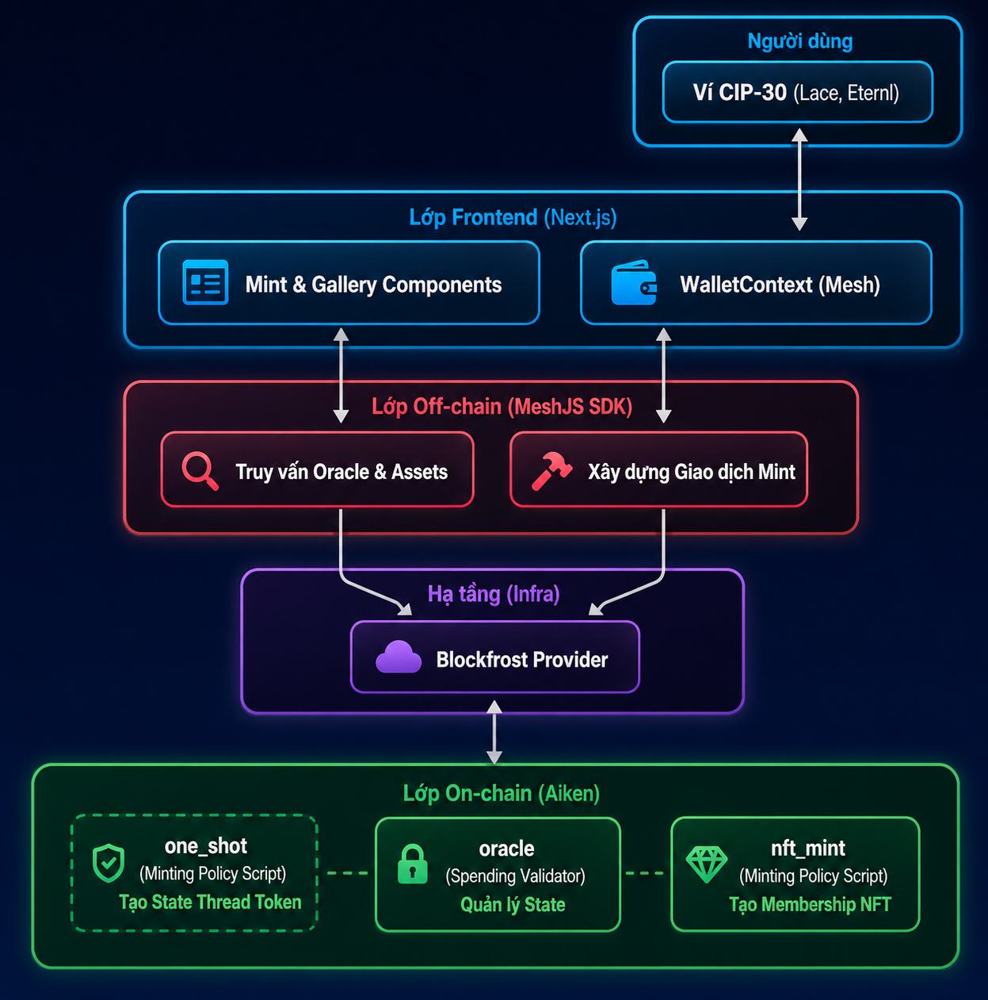

Mục lục bài học
Trong thế giới Web3 và blockchain, NFT (Non-Fungible Token) không chỉ đơn thuần là các tác phẩm nghệ thuật kỹ thuật số để sưu tầm hay đầu tư. Một trong những ứng dụng thực tế và mạnh mẽ của NFT là làm Thẻ thành viên số (Membership NFT) hoặc Vé điện tử (Event Pass / Token-Gated Access).
C2VN Membership #1, C2VN Membership #2, C2VN Membership #3, ...).Trong thế giới thực, các số thứ tự đặc biệt hoặc thấp thường được ưa chuộng và có thể có giá trị cao hơn. DApp Membership NFT đảm bảo phân bổ công bằng: không ai có quyền lựa chọn số thứ tự cho riêng mình.
Lưu ý: Chi tiết các bước cài đặt và chạy dApp có trong tài liệu README.md.

DApp Membership NFT tuân thủ kiến trúc 3 lớp (Front-end, Off-chain, On-chain) giống các dApp trước đây. Tuy nhiên, lớp On-chain có sự tham gia của 3 validators: trong đó có 1 Spending Script (oracle.ak) và 2 Minting Policy Scripts (one_shot.ak, nft_mint.ak).
Minting Policy Script là loại script sử dụng để kiểm soát việc Đúc (Mint) hoặc Đốt (Burn) các Native Tokens. Nó định nghĩa các quy tắc tạo nên chính sách đúc tiền.
Asset Name, đại diện cho từng loại tài sản trong "họ" tài sản đó. Hai thành phần này tạo nên 1 định danh đầy đủ của tài sản (PolicyId + AssetName).tx.mint) của giao dịch có số lượng token khác 0 (> 0 là đúc, < 0 là đốt với số lượng tương ứng).Redeemer, PolicyId và Transaction làm tham số. Vì không quản lý việc chi tiêu UTxO, nó hoàn toàn không có tham số Datum.Trong mô hình eUTxO, trạng thái (state) được lưu giữ cục bộ tại UTxO (thông qua Datum). Trong các loại script, chỉ có Spending validator quản lý UTxO, nên chỉ có nó mới có khả năng quản lý trạng thái.
Yêu cầu của dApp là mỗi Membership NFT đúc ra phải mang số thứ tự tăng dần (#1, #2, #3...) và nhiệm vụ này phải được giải quyết ở on-chain 1 cách tin cậy và minh bạch. Tuy nhiên, vì Minting Policy là một hợp đồng phi trạng thái, nếu sử dụng nó một cách đơn lẻ thì không giải quyết được yêu cầu này.
Với vai trò là "nguồn sự thật" chúng ta gọi nó là Oracle Validator. Validator này sẽ khóa một Oracle UTxO với Datum lưu giữ số thứ tự tiếp theo cần mint, cùng với các thông tin thanh toán.
pub type OracleDatum {
next_nft_index: Int, // Số thứ tự tiếp theo cần mint (1, 2, 3, ...)
min_price: Int, // Phí mint cố định trả cho Admin (Lovelace)
admin_address: Address, // Địa chỉ nhận phí của Admin
}oracle.ak): Cho phép chi tiêu Oracle UTxO cũ (Datum next_nft_index = N) và bắt buộc tạo ra Oracle UTxO mới với số thứ tự được cập nhật next_nft_index = N + 1.nft_mint.ak): Đọc số N từ Oracle UTxO đầu vào và chỉ cho phép mint đúng 1 NFT mang tên "C2VN Membership #N".Sự kết hợp này cho phép dApp sở hữu một bộ đếm tuần tự hoàn toàn phi tập trung và minh bạch!
Chúng ta tiếp tục đến với 1 vấn đề quan trọng khác đã được chỉ ra ở module 1: Làm thế nào để chống giả mạo Oracle UTXO? Làm sao để định danh nó một cách chính xác?
Trên Cardano, một mẫu thiết kế phổ biến để giải quyết vấn đề này là sử dụng State Thread Token.
Tham khảo thêm: Aiken Design Patterns - State Thread Tokens
Để đảm bảo State UTxO không bị "giả mạo", chúng ta gắn một NFT vào nó để đánh dấu, NFT này chính là State Thread Token (STT). Chỉ có UTxO nào chứa STT thì mới được coi là State UTxO chính thức, nắm giữ trạng thái hợp lệ của dApp.
💡 Để dễ hình dung, hãy tưởng tượng STT như một "chiếc gậy tiếp sức" trong một cuộc thi chạy tiếp sức. Chỉ người đang cầm chiếc gậy mới có quyền tiếp tục cuộc đua. Và khi hoàn thành lượt chạy, họ phải trao gậy cho người tiếp theo.
Trong dApp này, State UTxO là UTxO chứa dữ liệu Oracle (Oracle UTxO), và chúng ta gọi State Thread Token là Oracle NFT hay Oracle Token.
Làm thế nào để tạo ra được NFT định danh độc nhất mà không ai có thể mint thêm token thứ hai y hệt?
Chúng ta đến với một mẫu thiết kế phổ biến tiếp theo trên Cardano: One-time (One-shot) minting policy. Nhưng trước khi đến với mẫu thiết kế này, hãy cùng tìm hiểu một kỹ thuật nền tảng trong Plutus: Parameterized Script.
Trong mô hình smart contract của Cardano, một validator có thể được định nghĩa để nhận các tham số khởi tạo. Điều này tạo ra sự linh hoạt và khả năng tái sử dụng chỉ với một lần code. Với mỗi bộ tham số khác nhau, chúng ta sẽ có một phiên bản script khác nhau, và do đó script hash (hay policy Id) và địa chỉ script cũng sẽ khác nhau.
Trong Aiken, một parameterized script được định nghĩa như sau:
// one_shot là 1 parameterized script, nhận vào 1 tham số
validator one_shot(utxo_ref: OutputReference) {
// logic của one-shot minting policy
}Sử dụng: Parameterized script sau khi biên dịch sẽ được apply tham số ở off-chain code, thu được script cbor đầy đủ để truyền vào giao dịch.
// apply tham số utxo_ref vào one_shot script
const oneShotCbor = applyParamsToScript(compiledOneShotCode, [
mOutputReference(paramUtxo.txHash, paramUtxo.outputIndex),
]);Tham khảo thêm: Aiken Design Patterns - One-Shot Minting Policies
Trên Cardano, chúng ta có các chuẩn NFT như CIP-25, CIP-68, ... Tuy nhiên, đây chủ yếu là các quy ước về cách tạo và quản lý NFT, mà không có rào cản kỹ thuật nào ngăn nhà phát hành âm thầm mint thêm token thứ 2 giống hệt. Vậy có giải pháp kỹ thuật nào để tạo ra token độc nhất trên Cardano mà không phụ thuộc vào bất kỳ ai không?
One-shot Minting Policy được tham số hóa bằng một UTxO (thông qua mã tham chiếu của nó utxo_ref: OutputReference). Chúng ta gọi UTxO này là param UTxO. Trong giao dịch mint token, script cần đảm bảo 2 điều kiện:
Với thiết kế này, sau lần mint đầu tiên, param UTxO bị tiêu thụ, không còn tồn tại trên blockchain. Do đó điều kiện 2 của phiên bản script này sẽ không thể thỏa mãn thêm bất kỳ 1 lần nào nữa.
💡 Param UTxO như một chiếc “vé dùng một lần”. Sau khi sử dụng, nó sẽ bị tiêu hủy và không dùng lại được nữa.
Nếu nhà phát hành cố gắng mint thêm, họ sẽ phải tiêu thụ một UTxO khác có OutputReference khác. Khi đó, họ đang sử dụng một parameter khác -> tạo ra một phiên bản minting policy khác và do đó có policy ID khác.
Kết quả là, minting policy với param UTxO ban đầu chỉ có thể mint đúng 1 lần duy nhất trong toàn bộ lịch sử blockchain.
Đó chính là lý do nó được gọi là One-Shot (One-Time) Minting Policy. Và đây là giải pháp để tạo ra NFT thực sự trên Cardano, được đảm bảo bởi chính mã nguồn Minting Script!
Trong bài học tiếp theo, chúng ta sẽ đi vào chi tiết mã nguồn Aiken của cả 3 validators và phân tích cơ chế Multi-Validator với 5 chốt chặn an toàn. Hẹn gặp lại các bạn!